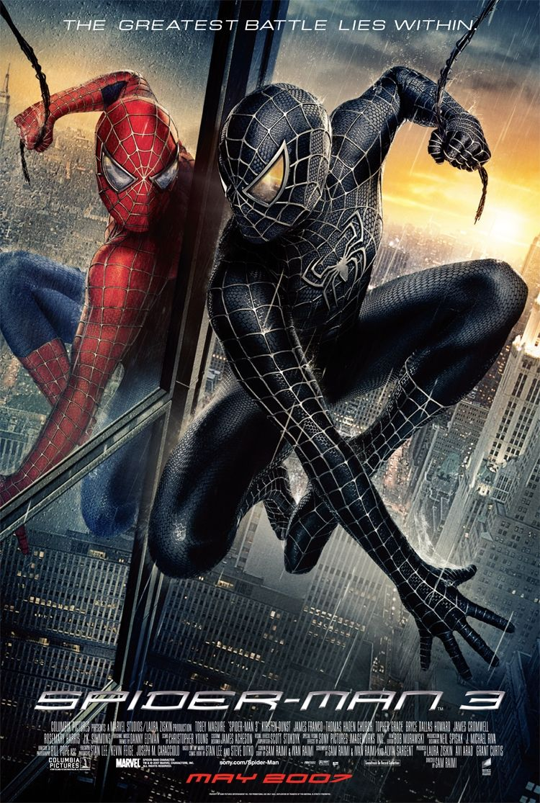

The Sequels
After the success of the first movie, Maguire's Spider-Man portrayal was given two more movies: Spider-Man 2 and Spider-Man 3.

The second Spider-Man movie dealt with Peter Parker officially becoming Spider-Man and the rise of the hero's popularity throughout New York. The movie featured Doc-Ock as it's main villain, and was a success at the time of it's release. |

The third Spider-Man movie focused on Peter Parker fighting his inner demons; The movie showed him Peter facing an inner crisis as he his ethics and morals clashed agaisnt those of Spider-Man. While dealing with a personal crisis, Spider-Man also had to fight classic villains like Venom and Sandman. |
|
The third movie was not met with good reviews, and the backlash faced by the movie resulted in the ending of this Spider-Man swinging...for now. |
|